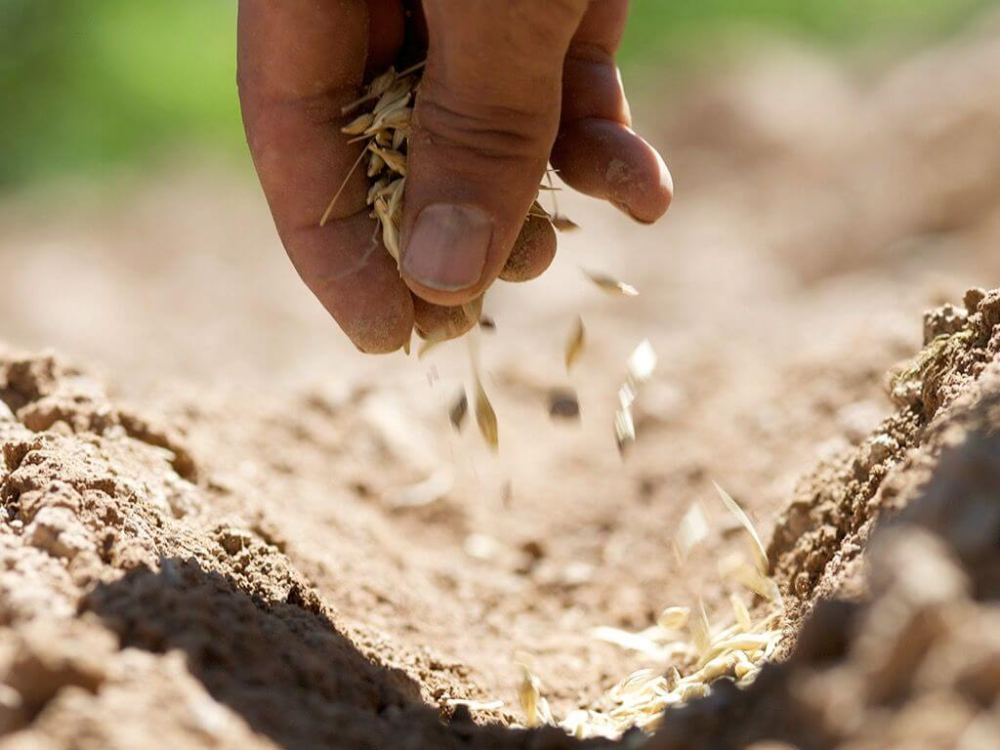

Benih Yang Baik
Menguatkan Jemaat melalui Firman Allah
Menguatkan Jemaat melalui Firman Allah
Gelombang Kedua Tahun 2021 untuk Ayo Baca dan Belajar Alkitab dalam 90 Hari (ABBA90) akan dimulai dalam:
Benih yang baik itu adalah orang-orang yang sudah menjadi umat Allah. Matius 13:18 (BIS)
Benih Yang Baik hadir untuk menguatkan orang-orang yang sudah menjadi umat Allah dalam prinsip-prinsip dasar Alkitab.
Kami berusaha untuk melaksanakan itu dengan menyediakan materi pemuridan Alkitabiah yang berkualitas serta memudahkan akses kepada materi tersebut.